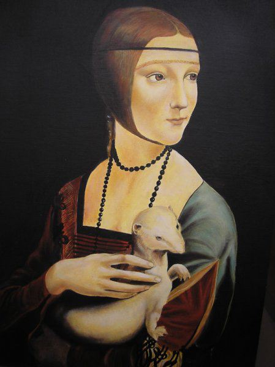

Marzec 2026 · Zofia Siek

Czym jest tempera jajeczna?
Tempera jajeczna to jedna z najstarszych technik malarskich, stosowana od starożytności aż po wczesny renesans. Jej nazwa pochodzi od łacińskiego słowa temperare, oznaczającego mieszanie — pigmenty ucierano z emulsją na bazie żółtka jajka, które pełniło rolę spoiwa.
W przeciwieństwie do farb olejnych, tempera schnąca bardzo szybko, co wymaga od malarza precyzyjnej pracy i planowania. Każda warstwa musi być nakładana sprawnie, a efekt buduje się stopniowo — od jasnych tonów po ciemne detale.
Historia i mistrzowie tempery
Technika tempery jajecznej dominowała w malarstwie europejskim od wczesnego średniowiecza do XV wieku. Posługiwali się nią tacy mistrzowie jak Giotto, Fra Angelico, Sandro Botticelli czy Andrei Rublow — twórca najsłynniejszych ikon prawosławnych.
W Polsce tempera była stosowana w malarstwie tablicowym i ikonowym, a wiele zachowanych dzieł z XIV i XV wieku to właśnie prace temperowe na deskach lipowych lub dębowych.
Jak przygotować emulsję temperową?
Tradycyjny przepis jest zaskakująco prosty:
- Oddzielamy żółtko od białka
- Delikatnie oczyśczamy żółtko z resztek białka, trzymając je na dłoni
- Nakłuwamy woreczkę żółtkową i przelewamy zawartość do naczynia
- Dodajemy równą objętość wody destylowanej
- Mieszamy do uzyskania jednorodnej emulsji
Tak przygotowaną emulsję mieszamy z suchymi pigmentami — od ochr i umbr po droższe lazuryty i cynobry. Każdy pigment wymaga innej proporcji spoiwa, co jest częścią rzemiosła, którego uczy się latami.
Tempera dziś
Choć technika olejowa zdominowała malarstwo od XVI wieku, tempera jajeczna przeżywa renesans wśród współczesnych artystów i konserwatorów. Ceniona jest za intensywność kolorów, trwałość i matowy, aksamitny charakter powierzchni.
W mojej pracowni stosuję temperę jajeczną zarówno przy tworzeniu kopii dawnych dzieł, jak i podczas warsztatów artystycznych, gdzie uczestnicy mogą sami przygotować emulsję i stworzyć swój pierwszy obraz tą niezwykłą techniką.
Chcesz poznać temperę w praktyce?
Zobacz ofertę warsztatów